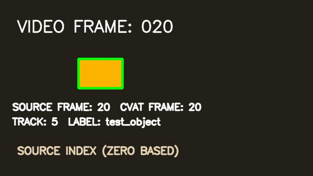

Numbered source video
OpenCV encodes a 60-frame MP4 and reopens the finished file to verify FPS, count, and dimensions.
synthetic_tracking.mp4Architecture / six steps
The principal workflow runs through Python and CVAT’s REST-backed SDK. CVAT’s browser interface is only a way to inspect the resulting task.
Execution path
Task creation, background processing, annotation storage, export, and import are separate operations with observable results.
OpenCV encodes a 60-frame MP4 and reopens the finished file to verify FPS, count, and dimensions.
synthetic_tracking.mp4CVAT receives the MP4 and a test_object label. The script waits for ingestion and reads the job and frame metadata.
Frames 5–20 carry explicit rectangle shapes; frame 21 ends the track with an outside flag.
PUT /api/tasks/{id}/annotations/The source task exports CVAT for video 1.1. Python parses its frames, coordinates, labels, keyframes, and outside flag.
POST /api/tasks/{id}/dataset/exportThe same video is attached to a second task. The exact CVAT archive is imported using the server’s CVAT 1.1 importer.
POST /api/tasks/{id}/annotations/Live API annotations, both CVAT exports, and served frame images are checked against the expected video geometry.
GET /api/tasks/{id}/annotations/Annotation model
The orange object moves four pixels right on each source frame. Its rectangle is recorded explicitly on every visible frame, so alignment checks do not depend on interpolation.
test_objectx = 80 + 4 × f y = 120 w = 90 h = 60 CVAT points = [x, y, x + w, y + h] frame 10 → [120, 120, 210, 180]

Asynchronous operations
Media ingestion, export, and import return background request IDs. Python polls their status and stops with a clear error if a request fails or exceeds 600 seconds.
See the verified outcomes →Switch between the source video and CVAT annotations.